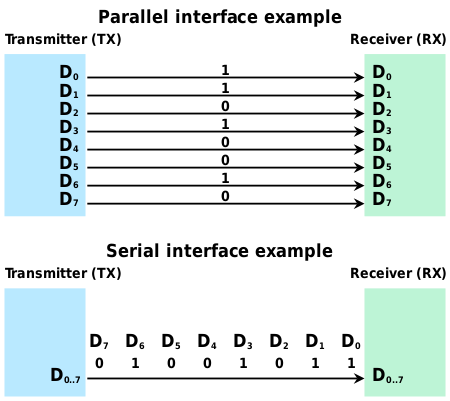
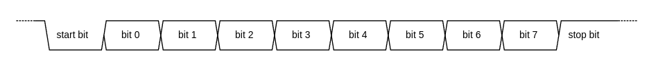
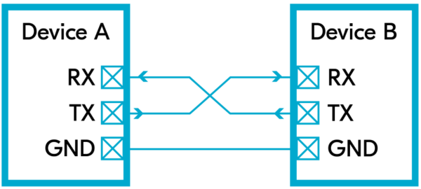
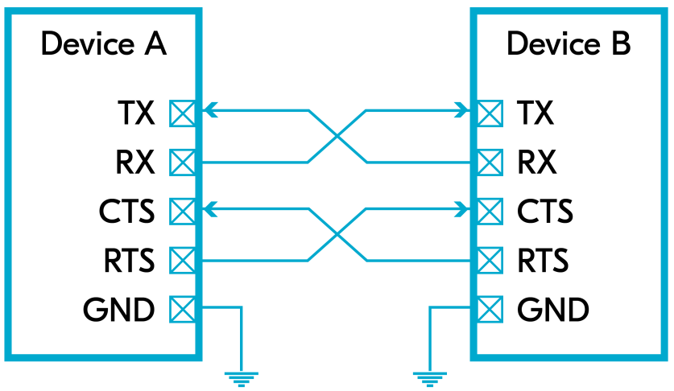
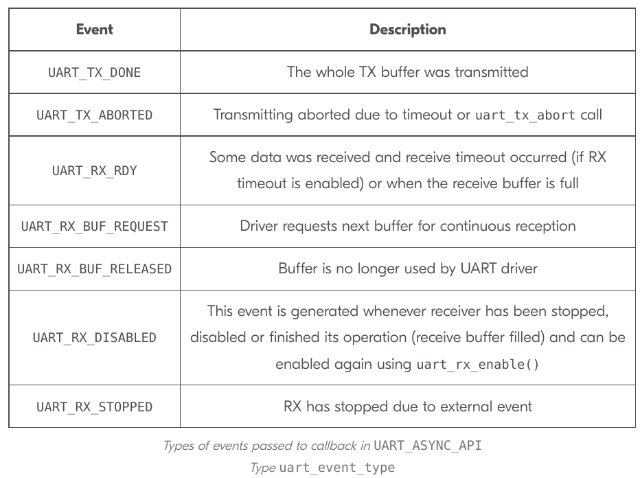
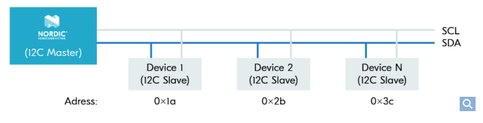
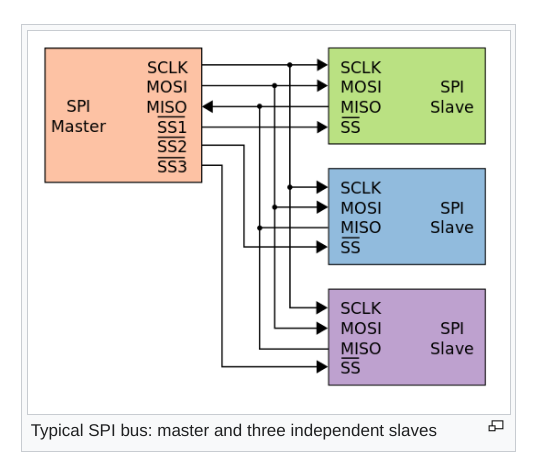

Zephyr: Serial Communication
BME554L -Fall 2025 - Palmeri
Serial vs. Parallel
What is Serial Communication?
Send data one bit at a time, sequentially, over a single wire; in contrast to parallel communication, where multiple bits are sent as a whole, on multiple wires.
Common examples:
- RS-232
- USB
- SATA/SCSI
- PS/2
- Ethernet
- HDMI/DVI
- PCIe (not PCI!)

Why Serial over Parallel?
- Parallel communication can communicate more bits / clock cycle, but serial links can be clocked much faster.
- No clock skew between bits
- Fewer cables / connections (cheaper)
- Better isolation from noise / interference / crosstalk
Universal Asynchronous Receiver/Transmitter (UART)
UART is an asynchronous serial communication protocol. It is a common peripheral on microcontrollers, and is used to communicate with other devices, such as sensors, over a serial link.

Start bitis usuallyLOW, followed by 8 bits of data.- A
paritybit–conveying an even of odd data stream–can be used for error checking.
Tx/Rx without Flow Control

RXsenses the start bit and then stores the subsequent bits in a shift register (making a “word”).- The data baud rate between
TX:RXneeds to be established between the two devices. This is typically 9600 or 115200 bits/s.
Tx/Rx with Flow Control

RTS(Request to Send)CTS(Clear to Send)- UART ISRs are triggered by
RTSandCTSevents. - High-priority event helps avoid missing data, but can cause starvation of other tasks.
- Low-priority event can cause data loss, but allows other tasks to run.
- Multi-threaded RTOS can be much more robust than a single-threaded super-loop system.
UART Firmware API Events

Inter-Integrated Circuit (I2C)

- Widely-used 2-wire serial communication protocol.
- Limited to short distances.
SCL: serial clockSDA: serial data- Common data communication rates: 100, 400, & 1000 kbps
- Access data using simple
read()andwrite()functions. - Multiple devices, with unique addresses, can be connected to the same bus.
Alternative Master/Slave Terminology

- Primary/Secondary
- Controller/Peripheral
- Controller/Responder
- Parent/Child
Nordic TWI (Two-Wire Interface)
Nordic’s I2C implementation is called TWI (Two-Wire Interface).
UART vs. I2C
- UART is a point-to-point protocol, while I2C is a multi-point protocol.
- UART is asynchronous (2-way communication, full duplex), while I2C is synchronous (half duplex, needs
CLK). - Both are “slow”, but I2C is faster.
- UART is simpler to implement, but I2C is more robust.
SenseWire (I3C)
- 2-pin superset of I2C (backward compatible)
- Lower power and space requirements
- Higher data rates
- Dynamic address assignment
- “Hot” peripheral connection
Serial Passing Interface (SPI)

- Like I2C, but allow for full duplex (concurrent send/receive of data).
- Needs 4 wires:
MOSI: master out, slave inMISO: master in, slave outSCLK: serial clockSS: slave select (LOWto select)
SSinstead of device address
I2C vs. SPI
- Higher data speeds than I2C (e.g., SD card)
- More complicated connectivity scheme for multiple peripherals
Zephyr: Sensors
- The reading of data from sensors is so common that Zephyr provides a common API for accessing them.
- Channels: measurable quantities (e.g., temperature, humidity, acceleration, etc.)
Fetching & Getting Data
- Fetching data from a sensor is done using
sensor_sample_fetch()function. Fetching stores the data in a buffer on the sensor. - Getting data from the sensor is then done using
sensor_sample_get(). Getting reads the data from the buffer and returns it to the user.- A sensor can have multiple channels, and each channel can have multiple samples.
- Sensor channels are specified using a
sensor_channelenum:sensor_channel
sensor_valuestruct of 2 intsint32_t val1: integer part of valueint32_t val2: fractional part of value
Helper Functions
- Helper functions exist to convert values (units, struct -> float, etc.)
sensor_value_to_float()
Example Firmware
Example Connection of MCP9808 Temperature Sensor

| Breakout Board | DK GPIO Pin |
|---|---|
SDA |
P0.26 |
SCL |
P0.27 |
Vdd |
VDD |
GND |
GND |
prf.conf
CONFIG_SENSOR=ynrf52833dk_nrf52833.overlay
/* I2C Pin Mapping
SCK: P0.27
SDA: P0.26
*/
&i2c0 {
mcp9808@18{
compatible = "jedec,jc-42.4-temp";
reg = <0x18>;
status = "okay";
};
};main.c
#include <zephyr/kernel.h>
#include <zephyr/device.h>
#include <zephyr/logging/log.h>
#include <zephyr/drivers/sensor.h> // prf.conf -> CONFIG_SENSOR=y
#define MEASUREMENT_DELAY_MS 1000
LOG_MODULE_REGISTER(main, LOG_LEVEL_DBG);
int read_temperature_sensor(const struct device *temp_sensor, float *temperature_degC);
// the microchip,mcp9808 cannot be accessed in the DT by alias
// instead, have to directly access the node name, with comma replaced by underscore
const struct device *const temp_sensor = DEVICE_DT_GET_ONE(jedec_jc_42_4_temp);
static float temperature_degC;
int main(void) {
int ret;
if (!device_is_ready(temp_sensor)) {
LOG_ERR("Temperature sensor %s is not ready", temp_sensor->name);
return -1;
}
else {
LOG_INF("Temperature sensor %s is ready", temp_sensor->name);
}
// read the temperature every MEASUREMENT_DELAY_MS
while (1) {
ret = read_temperature_sensor(temp_sensor, &temperature_degC);
if (ret != 0) {
LOG_ERR("There was a problem reading the temperature sensor (%d)", ret);
return ret;
}
LOG_INF("Temperature: %f", (double)temperature_degC);
k_msleep(MEASUREMENT_DELAY_MS);
}
return 0;
}
int read_temperature_sensor(const struct device *temp_sensor, float *temperature_degC) {
/* Fetch-n-get temperature sensor data
INPUTS:
temp_sensor (const struct device *) - temperature sensor device
temperature_degC (float *) - pointer to store temperature in degrees Celsius
RETURNS:
0 - success
Otherwise, error code
*/
struct sensor_value sensor_vals = {.val1 = 0, .val2 = 0};
int err = sensor_sample_fetch(temp_sensor);
if (err != 0) {
LOG_ERR("Temperature sensor fetch(): %d", err);
return err;
}
else {
// sensor channels: https://docs.zephyrproject.org/latest/doxygen/html/group__sensor__interface.html#gaaa1b502bc029b10d7b23b0a25ef4e934
err = sensor_channel_get(temp_sensor, SENSOR_CHAN_AMBIENT_TEMP, &sensor_vals);
if (err != 0) {
LOG_ERR("Temperature sensor get(): %d", err);
return err;
}
}
// data returned in kPa
*temperature_degC = sensor_value_to_float(&sensor_vals);
LOG_INF("Temperature (deg C): %f", (double)*temperature_degC);
return 0;
}Resources
- Wikipedia: Serial Communication
- DevAcademy: UART
- DevAcademy: I2C
- All About Circuits: Master / Slave Terminology Reexamind
- Zephyr: Sensors
- GitHub: Zephyr MPR Sensor Sample